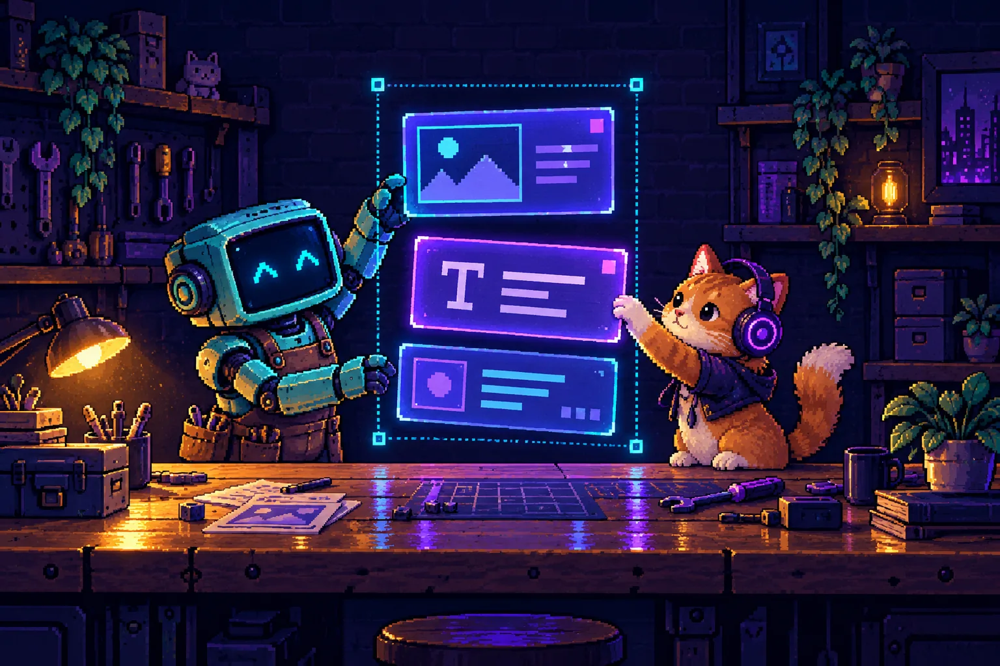
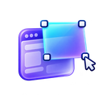
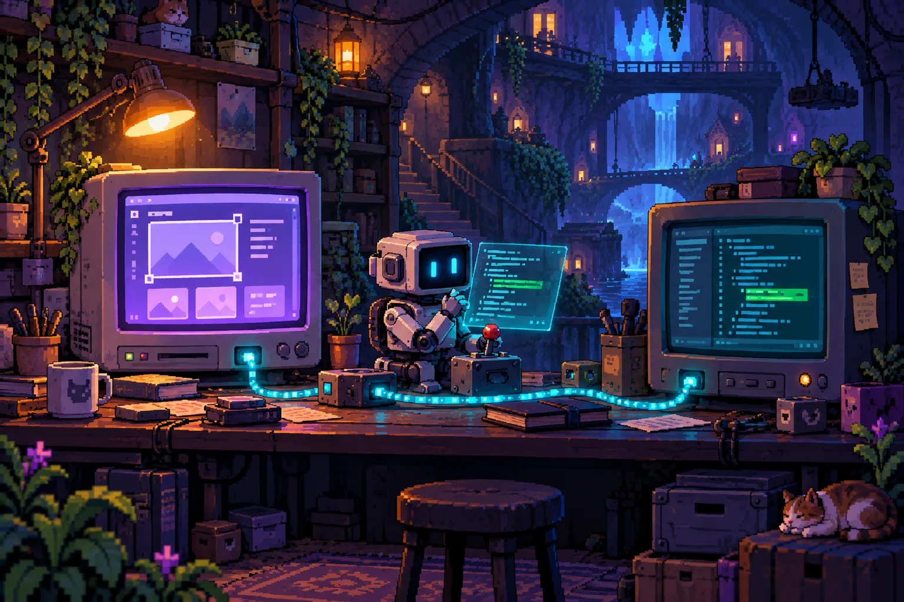

Work with the page.
Not around it.
Double-click to select. Right-click for tools. Ctrl-click to build a selection, or draw a rectangle around the objects you want to move together.


livelayoutEDITOR Get the extensionA DevFoundery's little magic.
A lot of developer control.
Welcome to your visual editing workshop. Move elements, explore live CSS, and review supported source changes in your connected localhost project.
❯ Ready when you are. Select. Tweak. Create.▌
Plain HTML ✳ React / JSX ✳ CSS ✳ VS Code ✳ Cursor ✳ Your editor
Source support depends
See a change, make a change.
Try a small interactive demonstration below.
This sandbox doesn’t edit your project files.
DESIGN IN THE OPEN
Choose a tool below. Watch the element and CSS change together.
Explore on the surface.
Stay in control underneath.
Double-click to select. Right-click for tools. Ctrl-click to build a selection, or draw a rectangle around the objects you want to move together.

Position while moving. Dimensions while resizing. The inspector brings related properties into view, highlights them, and updates values live.
Explore color, spacing, typography, size, and layer order. Undo a change. Hide an object and bring it back with its Show hint. Keep panels out of your way.
A more direct workflow for visual layout work.
DevTools remains your debugging
powerhouse.
The browser’s deep toolkit for DOM, CSS, JavaScript, network activity, and performance. Connected Workspaces can also save supported file edits locally.
A visual workflow for developers adjusting what’s on screen: group selections, direct manipulation, contextual controls, and guarded source edits on connected projects.
Better suited to your visual editing task. A focused companion to DevTools—not a replacement for its debugger, network tools, or performance profiler. Source compatibility still depends on supported patterns.
Edit in the browser. See it in your code editor. Connect the project serving your localhost page, make your visual changes, then click Apply changes in code. After you review and confirm, the companion writes supported edits to the original files; VS Code, Cursor, and other editors detect those file changes automatically.
Automatic editor detection happens after confirmed Apply. Dragging or clicking outside an element only stages a preview; it does not silently save every edit to disk.
Explicit project connection. Explicit Apply.
Review the source changes before writing.
Conflicting disk changes block the write.

<h1 class="hero-title"
− style="color: #ffffff"
+ style="color: #c5f66b;
+ translate: 24px 16px"
>Your next idea</h1>
Follow the localhost journey.
Select each checkpoint to see what changes.
Illustrative walkthrough; no files are accessed.
No editor plugin is required: the companion edits the original files on disk. Save open editor buffers first; unsaved in-memory changes cannot be checked in every editor.
Preview ideas on ordinary webpages you can access. Export a report to communicate the changes or recreate them in your own code.
Connect the folder serving your localhost page. Stage edits visually, then review and apply supported changes to your original project files.
The current release uses Chrome’s developer
installation flow. Follow the
illustrated guide.
Download the full written instructions ↗
WINDOWS COMPANION · NODE.JS 20+
Other platforms: use manual paths where supported; the current folder browser and
illustrated installer are Windows focused.
Visual previews and source edits have different
boundaries. Here’s what to expect
today.
DOM-based edits in accessible pages. Chrome internal pages are restricted; embedded frames, closed shadow roots, and canvas content can limit selection.
Literal content, attributes, and supported style edits. Reviewed source changes for connected projects.
Static text, attributes, and style patterns. Optional development mappings improve source identification.
Conservative literal template patterns. Dynamic bindings and unsupported syntax may block source saving.
Ambiguous matches are blocked. Shared declarations and design-token edits need supported mappings and explicit options.
Source discovery is not universal compiler provenance. The extension won’t silently guess when it cannot identify a supported target confidently.
The visual editor is here.
Simpler distribution and deeper compatibility
are
the next chapters.
Visual editing, live CSS, group selection, reviewed local source saving, and a Windows companion setup script.
v3.11Explore the source code, report issues, and follow releases on GitHub.
View repository ↗A packaged companion runtime and Chrome Web Store distribution, subject to preparation and review.
Not yet availableMore adapters, stronger mappings, shared component handling, and broader operating-system support.
Compatibility firstIt is designed to be more direct for visual layout work: group selection, movement, resizing, contextual controls, and action-following CSS. DevTools is more comprehensive for debugging and already offers local persistence through Workspaces. Choose the tool that fits the task; our source-saving advantage is the integrated visual edit → review → apply workflow for supported connected projects.
After you connect the project and confirm Apply, supported changes are written to the original files and your editor detects the disk updates automatically. There is no need to copy the approved CSS manually. Individual drags and clicks only stage previews; the current release does not save every edit to disk automatically.
No. Visual DOM previews are broader than source-saving support. Source adapters handle supported syntax and patterns. Dynamic values, repeated components, and ambiguous source matches can block Apply. The compatibility section describes the current boundaries.
Choosing a project folder connects the original files locally through the companion. This workflow does not upload your project to a server. This website’s interactive playground is a separate demonstration and never reads your files.
No specific editor is required. Start your project’s existing development or static server. There is no universal requirement for npm run dev:visual or a package.json. The local companion currently needs Node.js 20+, even if your project itself does not use Node.
Save all open files before applying browser edits. The companion checks disk changes, but it cannot inspect every editor’s unsaved memory buffers. Keep your project in version control and review the proposed source changes.
Export downloads a JSON record and a readable TXT change report. It does not publish a website or apply changes to code. Local source changes use the separate Apply changes in code workflow.
Not yet. The current developer preview is distributed as a ZIP and loaded unpacked in Chrome. A Web Store release and a standalone companion installer are planned.
Your toolkit is ready. Download the developer preview.
Explore visually. Review
changes. Apply supported edits to source.